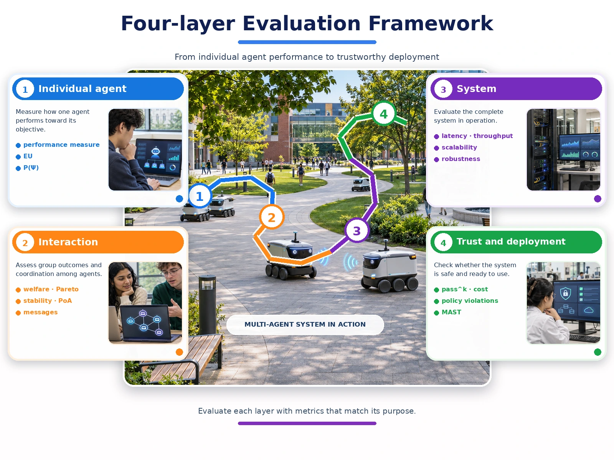

Guest lecture · CAI 461 Topic 8
Performance Evaluation of Agent-Based Systems
How do you know a multi-agent system works well? One evaluation method, from rational agents to LLM agent teams.


Learn each layer: 1 Individual agent 2 Interaction 3 System 4 Trust and deployment
A system of rational agents can still be slow, unstable or unreliable
Earlier in CAI 461 you designed agents, made them talk, made them negotiate and simulated them in NetLogo. Topic 8 asks the question that sits on top of all of that: how do we prove the system performs well?
The answer is never a single number. A trading agent can be rational and still lose money for the group. A Contract Net can find good allocations and still drown in messages at 500 agents. An LLM agent can pass a benchmark on the first try and fail the same customer on the fourth.
This site follows the lecture in six modules, adds interactive tools you can use to check the worked examples, and prepares you for the two-hour practical lab.
Today’s question re-uses every earlier topic
| Topic 2 | Performance measure, rationality, utility |
| Topics 3–4 | What to log inside an agent and in its messages |
| Topic 5 | Social welfare, Pareto efficiency, Nash stability |
| Topic 7 | Verification, validation, sensitivity analysis |
By the end of the session you will be able to
Specify success
Write a performance measure, utility function or task predicate Ψ that measures the environment rather than the agent’s behaviour.
Judge group outcomes
Evaluate a protocol on social welfare, Pareto efficiency, stability and price of anarchy, and explain why stable is not the same as good.
Measure a running system
Choose metrics from six families, design a repeated, controlled experiment and read scalability and robustness curves.
Evaluate a simulation model
Plan verification, validation, replication and a sensitivity sweep, and report the model with ODD.
Evaluate LLM agents
Use pass^k reliability, cost-aware comparison, MAST failure labels and a validated LLM judge, all built on tracing.
Write an evaluation plan
Combine all of the above into a four-layer evaluation plan for a real system, as in the case activity and the lab.
Follow the lecture, one module at a time
Each module has the key ideas, worked examples, a link back to earlier CAI 461 topics and a short self-check quiz.
- 1What does “performing well” mean?Performance measures, rationality, expected utility, achievement and maintenance tasks.15 min
- 2Evaluating a society of agentsSocial welfare, Pareto efficiency, Nash stability, price of anarchy and protocol criteria.18 min
- 3Measuring the systemSix metric families, scalability and robustness curves, tracing, JADE tools and sound experiments.15 min
- 4Evaluating agent-based modelsVerification, validation, replication, sensitivity analysis and the ODD protocol.12 min
- 5Evaluating LLM-based agentsBenchmarks, pass^k reliability, cost, MultiAgentBench, MAST, LLM-as-a-judge and tracing.22 min
- 6Bringing it togetherThe four-layer evaluation framework, the case activity and key takeaways.22 min
New to the topic? Start with the big picture: an interactive map of the evaluation ecosystem, a timeline from 1980 to today, and one system followed through all four layers. Then see the full programme with timings.
Come prepared
- Re-read the PEAS description from Topic 2 and the Prisoner’s Dilemma from Topic 5.
- Have your NetLogo Project 1 model nearby; you will plan a sensitivity sweep for it.
- Skim the glossary for terms you have not met yet: pass^k, MAST, span.
Take part
- Answer the achievement or maintenance quick check in the chat or poll.
- Work in a breakout room on one of the three case studies.
- Keep the interactive tools open to test the worked examples yourself.
Apply it
- Complete the two-hour lab: instrument, trace and evaluate a small multi-agent system.
- Use the reading list for your project report.
- Try each module’s self-check quiz before the next class.
Who is leading the session
Assoc. Prof. Dr. Mohd Shahizan Othman
Guest speaker, Universiti Teknologi Malaysia
Delivers the lecture and the case activity as part of the PNU × UTM High-Impact Academic Practices programme. More of his short courses and teaching material are on github.com/drshahizan.
Dr. Eman Aljabarti
Host, Course Coordinator for CAI 461, Princess Nourah bint Abdulrahman University
Coordinates CAI 461 and the Topic 8 practical lab in which students instrument, trace and evaluate their own multi-agent system.
Frequently asked questions
Do I need to know LLMs before the session?
No. Modules 1 to 4 use only material from earlier CAI 461 topics. Module 5 explains each LLM evaluation idea from scratch and links it back to an older concept, for example pass^k back to success probability P(Ψ).
Is the lab graded?
The lab follows the course specification for the Topic 8 practical. Your course coordinator will confirm how it is assessed. The lab page lists what the report must contain.
Which tools will we use in the lab?
A small Python multi-agent system with tracing. The lecture uses LangSmith as the example tool, but any OpenTelemetry-compatible tracer works. The method matters more than the tool.
What should my group submit in the case activity?
One slide or one chat message containing one metric per layer, one baseline, one experiment, what you will trace and one likely failure mode with how you would detect it. Templates and model answers are on the case studies page.
Where are the slides?
Download the lecture slides as a PDF. The full reference list is on the resources page.